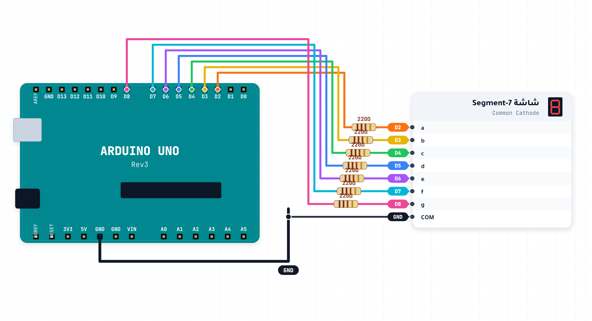

▶فيديو الشرح
نعرض الأرقام من 0 إلى 9 على شاشة السبع قطع، رقماً كل ثانية.
1المكونات
ARDUINO UNOboardشاشة 7-SegmentCommon Cathodeأسلاك توصيلJumper Wiresلوحة تجاربBreadboard
2مخطط التوصيل

اضغط على المخطط لتكبيره · نسخة SVG عالية الدقة
| القطعة | الطرف | يوصل إلى |
|---|---|---|
| شاشة 7-Segment | a | D2 عبر مقاومة 220Ω |
| شاشة 7-Segment | b | D3 عبر مقاومة 220Ω |
| شاشة 7-Segment | c | D4 عبر مقاومة 220Ω |
| شاشة 7-Segment | d | D5 عبر مقاومة 220Ω |
| شاشة 7-Segment | e | D6 عبر مقاومة 220Ω |
| شاشة 7-Segment | f | D7 عبر مقاومة 220Ω |
| شاشة 7-Segment | g | D8 عبر مقاومة 220Ω |
| شاشة 7-Segment | COM | GND |
3الكود
لا يحتاج هذا المشروع إلى أي مكتبة إضافية.
/* المشروع 4: ساعة رقمية مبسطة (7-Segment Display) كتاب: 38 مشروع في شهر — لؤي النصري (@robotlouay) شاشة ذات رقم واحد من نوع Common Cathode (الكاثود المشترك): a → Pin 2 b → Pin 3 c → Pin 4 d → Pin 5 e → Pin 6 f → Pin 7 g → Pin 8 (كل قطعة عبر مقاومة 220Ω) — الطرف المشترك COM ← GND إذا كانت شاشتك Common Anode: صِل COM بـ 5V وغيّر COMMON_ANODE إلى true. */ const bool COMMON_ANODE = false; const int segPins[7] = {2, 3, 4, 5, 6, 7, 8}; // a b c d e f g // كل صف يمثل رقماً من 0 إلى 9 (1 = القطعة مضيئة) const byte digits[10][7] = { //a b c d e f g {1,1,1,1,1,1,0}, // 0 {0,1,1,0,0,0,0}, // 1 {1,1,0,1,1,0,1}, // 2 {1,1,1,1,0,0,1}, // 3 {0,1,1,0,0,1,1}, // 4 {1,0,1,1,0,1,1}, // 5 {1,0,1,1,1,1,1}, // 6 {1,1,1,0,0,0,0}, // 7 {1,1,1,1,1,1,1}, // 8 {1,1,1,1,0,1,1} // 9 }; void showDigit(int n) { for (int i = 0; i < 7; i++) { bool on = digits[n][i]; if (COMMON_ANODE) on = !on; // عكس المنطق للأنود المشترك digitalWrite(segPins[i], on ? HIGH : LOW); } } void setup() { for (int i = 0; i < 7; i++) pinMode(segPins[i], OUTPUT); } void loop() { for (int n = 0; n <= 9; n++) { // عدّاد من 0 إلى 9 showDigit(n); delay(1000); // ثانية لكل رقم } }
هذا المشروع يعتمد على مكتبات أو لوحات غير متوفرة في mBlock 5، لذلك نستعمل Arduino IDE. انسخ الكود من تبويب Arduino IDE.
4كيف يعمل؟
- كل رقم مخزن كصف في مصفوفة من 7 قيم
- الدالة showDigit() تشغّل القطع المطلوبة
- العدّاد يزيد كل ثانية
- بعد 9 يعود إلى 0
⚠ قبل توصيل الكهرباء: راجع كل سلك مع الجدول أعلاه، وتأكد من عدم وجود تماس بين 5V و GND. اختر اللوحة والمنفذ الصحيحين من قائمة Tools في Arduino IDE.